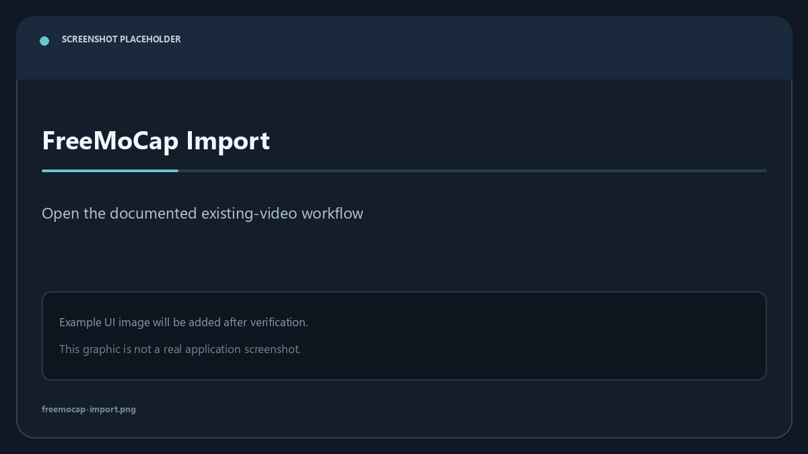
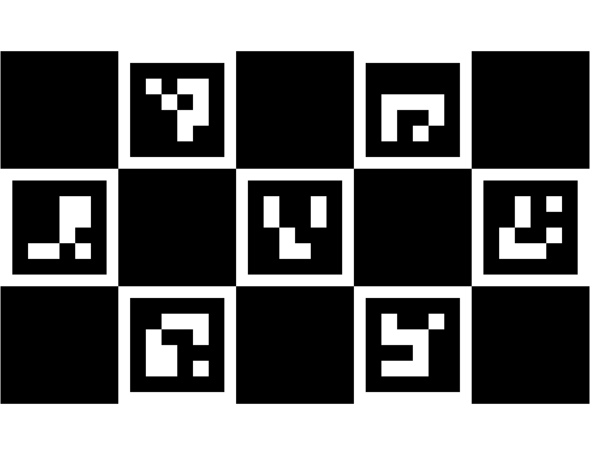

Turn an iPhone video into a fully animated Blender character.
A beginner-friendly workflow using FreeMoCap, FFmpeg, Blender, and Mixamo.


Make the next step obvious.
Each card opens a focused guide. Hover, focus, or tap through the sequence at your own pace.
Record a clean take
BeginnerFrame the full body, stabilize the phone, and keep the original video.
Open recording guide → 021 minPrepare your video
BeginnerConvert a copy only when your installed FreeMoCap version needs it.
Open conversion guide → 0310 minCalibrate when needed
IntermediateFollow matching board and camera steps for multi-camera capture.
Open calibration guide → 045 minTrack your motion
IntermediateImport your footage, process it, then inspect the motion output.
Open processing guide → 0520 minRetarget and animate
AdvancedMap compatible skeletons, review the whole take, then save a copy.
Open retargeting guide →A practical guide, not another black box.
Clear choices at each stage help you understand what to try, what to keep, and what to inspect.
Start with footage you can trust
Frame the whole movement, keep your original recording, and check quality before processing.
Recording guidance → 02 / FOLLOW YOUR VERSIONKnow what the tools actually support
Version-aware notes help you confirm imports, detectors, outputs, and calibration steps.
Processing guide → 03 / REVIEW THE RESULTRetarget with the right checks
Inspect the source and target rigs, then review the full animation before you export.
Retargeting guide →Estimated time, step by step.
Timings are practical estimates; processing time depends on your computer and footage.

Your first take, in three moves.
Keep the first session simple. Add calibration and conversion only when your workflow needs them.
Multi-camera capture? Read calibration first. Need another video format? Convert only if necessary.

Setup checklist
Tick items as you complete them. Progress stays in this browser on this device.
- Completed steps will appear here.
See each step take shape.


Most gallery cards are illustrative placeholders, not application screenshots. The FFmpeg setup and PATH images, plus the conversion example in its guide, are user-provided screenshots; personal values in the PATH image are redacted. The calibration board is a provided reference image—verify its printed dimensions against your FreeMoCap settings.
Find the right fix, faster.
bin folder and reopen your terminal.
Video import failsTry the original first; convert a copy if needed.
Calibration looks offMatch the printed board to the version’s settings.
Retargeting twistsReview bone mapping, axes, and rest pose.
A few common questions.
Do I need FFmpeg to use this workflow?
Not always. Start with your original recording; install FFmpeg only if your FreeMoCap version cannot read its format or you need a compatible copy. See FFmpeg setup.
Is camera calibration required for every recording?
No. Calibration is mainly relevant to multi-camera reconstruction and coordinate alignment. Check the guidance for your installed FreeMoCap version before beginning a single-camera test.
Will every FreeMoCap release create a Blender scene?
Supported detectors, exporters, filenames, and formats change between releases. Confirm the output supported by your installed version, then inspect the exported motion before retargeting.
Can I retarget the motion to any Mixamo character automatically?
Retargeting depends on compatible source and target skeletons, bone mapping, rest pose, scale, and axes. Use a tool that documents support for your Blender version and both rigs.

A community project, made to share.
Use the guides, improve them, and help keep the workflow accurate for the next creator.